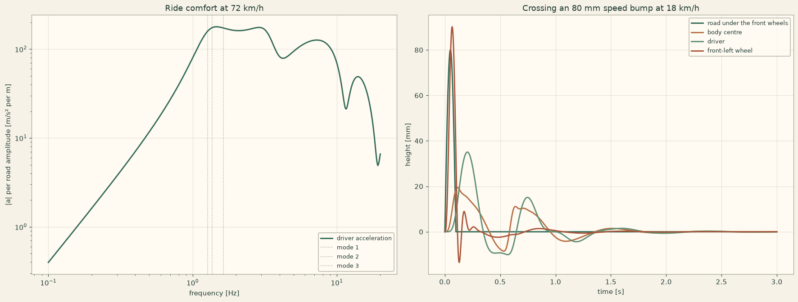

Docs › Examples › Lumped model of a vehicle suspension with occupants
Vehicle dynamics · 0D
Lumped model of a vehicle suspension with occupants
A car body with heave, pitch and roll, four wheels and two seats with occupants form an 11-degree-of-freedom network of masses, springs and dampers.
Run locally with OneSimulation. The example downloads are free. Running them requires an activated runtime. Runtime Alpha 0.2.1a7 · CPython 3.13 on macOS (Apple Silicon), Ubuntu 22.04 (x86-64), and Windows x64. Installation and activation · View pilot plans. Scope of the reference checks.


What it computes
OneSimulation assembles the network from springs and dampers between kinematic points of the rigid body, wheels and seats, solves the natural modes, the harmonic response to a road wave with the wheelbase delay and the transient crossing of a speed bump.
What it checks
The static spring and tyre compressions match the statics of the car to the printed digits, the driver follows the road with transmissibility 1.006 at 0.1 Hz, and in the harmonic state the power from the road equals the power dissipated in the dampers (105.79 W both).
The notebook
The complete notebook, cell by cell. Run it to produce the figures and the comparison printout.
Ride comfort is decided at low frequencies, below about 20 Hz, where a car moves as a few rigid bodies on springs: the body heaves, pitches and rolls on the suspension, the wheels hop on the tyres, and seats and occupants add their own small spring-mass systems. A lumped model with masses, springs and dampers captures this. With \(\mathbf q\) the free coordinates and \(\mathbf u\) the road heights under the four tyres,
Springs and dampers act between points: the corners and seat mounts of the body move with \(z\mp a\,\theta\pm w\,\varphi\) for small pitch \(\theta\) and roll \(\varphi\).
Setup. Body: 1200 kg, pitch inertia 2100 kg m², roll inertia 460 kg m²; front axle 1.2 m and rear axle 1.4 m from the centre of mass, half track 0.75 m. Wheels: 40 kg each, tyre stiffness 200 kN/m. Suspension: 28 kN/m and 2000 N s/m at the front, 24 kN/m and 1800 N s/m at the rear. Seats 0.3 m ahead of the centre of mass and 0.35 m left and right: cushion frame 15 kg on 60 kN/m and 500 N s/m; occupant 75 kg on the cushion with 50 kN/m and 1500 N s/m. Eleven coordinates: body heave, pitch and roll, four wheel heights, two seat frames and two occupants.
| element | between |
|---|---|
| tyre | wheel and road under it |
| suspension spring and damper | wheel and body corner |
| seat mount | body at the seat and seat frame |
| cushion | seat frame and occupant |
Reference. (1) Statics: under gravity the axle loads follow from the moment balance about the centre of mass, \(F_\text{front}=W_s\,b_s/L\) with the sprung weight \(W_s\) and its lever \(b_s\) to the rear axle, and each spring compresses by its load over its stiffness. (2) At very low frequency every coordinate follows the road rigidly (transmissibility 1). (3) In a harmonic state the power the road puts into the car equals the power dissipated in the dampers.
import numpy as np
from onesim.physics.solid_mechanics import Damper, LumpedMechanicalNetwork, Spring
from onesim.visualization import plots, theme
theme.set()Model
Each corner \(c\) of the body is a point \(\{z: 1, \theta: -x_c, \varphi: y_c\}\) with its distance \(x_c\) ahead of the centre of mass and \(y_c\) to the left; the road heights under the tyres are the inputs of the network.
front, rear, track, seat_x, seat_y = 1.2, 1.4, 0.75, 0.3, 0.35
corners = {
"fl": (front, track),
"fr": (front, -track),
"rl": (-rear, track),
"rr": (-rear, -track),
}
body_point = lambda x, y: {"heave": 1.0, "pitch": -x, "roll": y}
suspension = {
"fl": (28e3, 2000.0),
"fr": (28e3, 2000.0),
"rl": (24e3, 1800.0),
"rr": (24e3, 1800.0),
}
seats = {"driver": seat_y, "passenger": -seat_y}
car = LumpedMechanicalNetwork(
inertias={
"heave": 1200.0,
"pitch": 2100.0,
"roll": 460.0,
**{f"wheel_{c}": 40.0 for c in corners},
**{f"seat_{s}": 15.0 for s in seats},
**{f"occupant_{s}": 75.0 for s in seats},
},
springs=(
*(Spring(200e3, f"wheel_{c}", f"road_{c}") for c in corners),
*(
Spring(suspension[c][0], body_point(*corners[c]), f"wheel_{c}")
for c in corners
),
*(Spring(60e3, f"seat_{s}", body_point(seat_x, y)) for s, y in seats.items()),
*(Spring(50e3, f"occupant_{s}", f"seat_{s}") for s in seats),
),
dampers=(
*(
Damper(suspension[c][1], body_point(*corners[c]), f"wheel_{c}")
for c in corners
),
*(Damper(500.0, f"seat_{s}", body_point(seat_x, y)) for s, y in seats.items()),
*(Damper(1500.0, f"occupant_{s}", f"seat_{s}") for s in seats),
),
inputs=tuple(f"road_{c}" for c in corners),
)Natural modes
The undamped modes, each named after the coordinate that moves most.
modes = car.modes()
for k, frequency in enumerate(modes.frequencies):
shape = modes.shape(k)
print(
f"mode {k + 1:2d}: {frequency:6.2f} Hz, dominated by {max(shape, key=lambda name: abs(shape[name]))}"
)Static sag under gravity
Gravity acts on all masses; the seat mounts pass the weight of seats and occupants to the body ahead of its centre of mass. The axle loads from the moment balance give the spring compressions.
gravity = 9.81
sag = car.static(
{
name: -mass * gravity
for name, mass in car.inertias.items()
if name not in ("pitch", "roll")
}
)
sprung = 1200.0 + 2 * (15.0 + 75.0)
lever = (1200.0 * rear + 2 * (15.0 + 75.0) * (rear + seat_x)) / sprung
front_axle = sprung * gravity * lever / (front + rear)
expected = {
"front tyre": -(front_axle / 2 + 40.0 * gravity) / 200e3,
"rear tyre": -((sprung * gravity - front_axle) / 2 + 40.0 * gravity) / 200e3,
"front spring": -front_axle / 2 / 28e3,
"rear spring": -(sprung * gravity - front_axle) / 2 / 24e3,
}
computed = {
"front tyre": sag["wheel_fl"],
"rear tyre": sag["wheel_rl"],
"front spring": sag["heave"] - front * sag["pitch"] - sag["wheel_fl"],
"rear spring": sag["heave"] + rear * sag["pitch"] - sag["wheel_rl"],
}
for name in expected:
print(
f"static compression of the {name:13s}: {1e3 * computed[name]:8.3f} mm (statics {1e3 * expected[name]:8.3f} mm)"
)
print(
f"occupant sinks {1e3 * (sag['occupant_driver'] - sag['seat_driver']):.2f} mm into the cushion (statics {-1e3 * 75.0 * gravity / 50e3:.2f} mm); "
f"body pitch {1e3 * sag['pitch']:.3f} mrad"
)Ride comfort over a road wave
A road with a sinusoidal height reaches the rear wheels a wheelbase later than the front wheels. At 72 km/h the delay is \(L/v\); the driver's vertical acceleration per metre of road amplitude follows over 0.1–20 Hz.
speed = 20.0
delay = (front + rear) / speed
frequencies = np.geomspace(0.1, 20.0, 400)
response = {
c: (
np.exp(-2j * np.pi * frequencies * delay)
if c.startswith("r")
else np.ones_like(frequencies, dtype=complex)
)
for c in corners
}
harmonic = {
name: np.array(
[
car.frequency_response(
[f], inputs={f"road_{c}": response[c][k] for c in corners}
)[name][0]
for k, f in enumerate(frequencies)
]
)
for name in ("occupant_driver", "heave", "pitch")
}
acceleration = np.abs((2 * np.pi * frequencies) ** 2 * harmonic["occupant_driver"])
check = car.frequency_response([1.5], inputs={f"road_{c}": 0.01 for c in corners})
road_force = sum(200e3 * (0.01 - check[f"wheel_{c}"][0]) for c in corners)
supplied = 0.5 * np.real(np.conj(1j * 2 * np.pi * 1.5 * 0.01) * road_force)
print(
f"at 0.1 Hz the driver follows the road with transmissibility {abs(harmonic['occupant_driver'][0]):.4f} (rigid motion: 1)"
)
print(
f"harmonic state at 1.5 Hz, 10 mm road: power from the road {supplied:.4f} W, dissipated in the dampers "
f"{car.dissipated_power(1.5, {name: values[0] for name, values in check.items()}, inputs={f'road_{c}': 0.01 for c in corners}):.4f} W"
)
print(
f"largest driver acceleration per metre of road: {acceleration.max():.0f} m/s² per m at {frequencies[np.argmax(acceleration)]:.2f} Hz"
)Crossing a speed bump
A bump 80 mm high and 0.5 m long, a half sine in space, crossed at 18 km/h; the rear wheels meet it a wheelbase later.
bump_speed, height, length = 5.0, 0.08, 0.5
bump = (
lambda t: height
* np.sin(np.pi * np.clip(bump_speed * t / length, 0.0, 1.0))
* (0.0 <= bump_speed * t <= length)
)
times = np.linspace(0.0, 3.0, 1501)
positions, velocities = car.transient(
times,
inputs={
f"road_{c}": (
lambda t, d=(
delay * speed / bump_speed if c.startswith("r") else 0.0
): bump(t - d)
)
for c in corners
},
)
driver_acceleration = np.gradient(velocities["occupant_driver"], times)
print(
f"speed bump at 18 km/h: largest driver acceleration {np.abs(driver_acceleration).max():.2f} m/s², largest body pitch "
f"{1e3 * np.abs(positions['pitch']).max():.1f} mrad; after 3 s the body is back within {1e3 * abs(positions['heave'][-1]):.2f} mm"
)Figure
Left the driver's acceleration per metre of road amplitude over frequency at 72 km/h; right the heights of road, body centre and driver while crossing the bump.
fig = plots.figure(1, 2, size=(16, 6))
plots.line(
y={"driver acceleration": (frequencies, acceleration)},
vlines={f"mode {k + 1}": f for k, f in enumerate(modes.frequencies[:3])},
scale="loglog",
xlabel="frequency [Hz]",
ylabel="|a| per road amplitude [m/s² per m]",
title="Ride comfort at 72 km/h",
legend="lower right",
ax=fig[0],
)
plots.line(
y={
"road under the front wheels": (
times,
1e3 * np.array([bump(t) for t in times]),
),
"body centre": (times, 1e3 * positions["heave"]),
"driver": (times, 1e3 * positions["occupant_driver"]),
"front-left wheel": (times, 1e3 * positions["wheel_fl"]),
},
xlabel="time [s]",
ylabel="height [mm]",
title="Crossing an 80 mm speed bump at 18 km/h",
legend="upper right",
ax=fig[1],
)
plots.show()Going further
Tune the seat damping for the lowest peak acceleration, let only one side of the car hit the bump to excite roll, or replace the half-sine bump by a measured road profile.